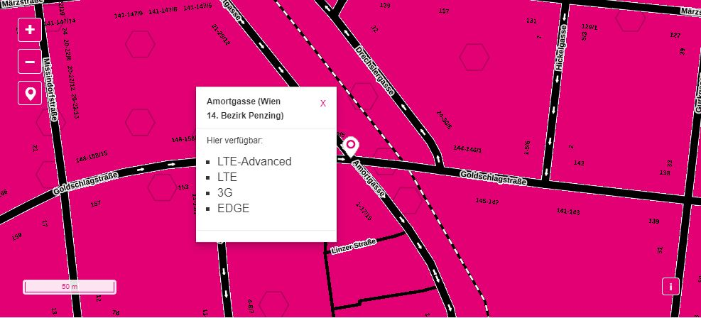
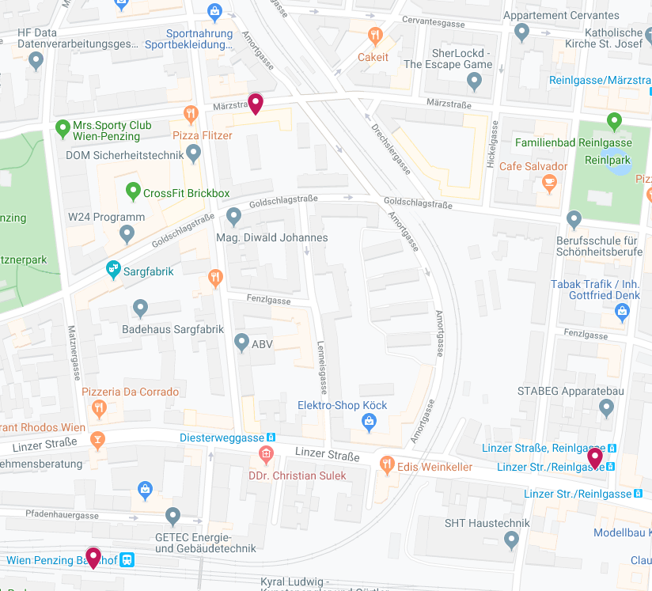

Guten Abend.
Ich habe seit heute eine Magenta Flex Box mit dem 250Mbit/s Download und 50Mbit/s Upload Tarif.
Ich habe jedoch das Problem das ich leider nur eine Geschwindigkeit von 4Mbit/s bis 10Mbit/s Download bekomme.
Bin mit einem LAN-Kabel mit dem PC verbunden.
Möchte nun Fragen ob es da vielleicht Tricks gibt oder ich vielleicht etwas noch einstellen muss, um eine größere Geschwindigkeit zu erzielen.
Ich kenne mich da leider nicht wirklich aus und hab etwas Angst das ich irgentetwas falsch gemacht habe.
Mit freundlichen Grüßen,
Andreas
Hallo @Andreas Hank
Es kommt bei Internet über Mobilfunk auf einige Dinge an, damit es gut funktioniert.
Zum einen wäre es interessant, wie die Empfangswerte sind. Diese sind unter
192.168.8.1
-> anmelden mit Passwort siehe unten auf der Box -> Einstellungen -> System -> Geräteinformationen. Wichtig sind hier die RSRP, RSRQ und SNIR Werte. Bei Gelegenheit würde ich da auch die Box auf die neuste Firmware bringen (neben Einstellungen gibt es den Punkt Aktualisieren).
Besonders am Abend/Wochenende kann es sein, dass deutlich mehr Benutzer in deiner Gegend über das Magenta Mobilfunknetz Online gehen wollen. Da Mobilfunk ein geteiltes Medium ist kann es dann je nach Region vorkommen, dass die Bandbreiten deutlich einbrechen, da diese auf mehrere Nutzer aufgeteilt wird. Wenn die Bandbreite in der Nacht deutlich höher ist, ist es definitiv ein Auslastungsproblem. Wie sieht außerdem der Upload aus?
Schau auch mal nach was laut der
Netzabdeckungskarte
an deinem Standort verfügbar ist. Wenn es maximal "LTE" ist dann sind im blödesten Fall nur 75 Mbit/s im Download & 25 Mbit/s im Upload verfügbar und im besten Fall 150 Mbit/s im Download und 50 im Upload verfügbar. Bei "LTE-Advanced" sind in der Regel mindestens 225 Mbit/s im Download und 50 Mbit/s im Upload verfügbar. Diese Bandbreiten sind allerdings das technische Maximum unter idealen Empfangsbedingungen und wenn man der einzige Nutzer im Sektor ist.
Interessant wäre auch wie du auf die Bandbreiten kommt. Welcher Speedtest und wie ist das Endgerät zum Router verbunden?
Es gibt noch ein paar andere Dinge die man ausprobieren kann, aber beantworte mal die Fragen.
LG NTM

Am 30.11.2019 um 23:26 schrieb NTM:Hallo @Andreas Hank
Es kommt bei Internet über Mobilfunk auf einige Dinge an, damit es gut funktioniert.
Zum einen wäre es interessant, wie die Empfangswerte sind. Diese sind unter 192.168.8.1 -> anmelden mit Passwort siehe unten auf der Box -> Einstellungen -> System -> Geräteinformationen. Wichtig sind hier die RSRP, RSRQ und SNIR Werte. Bei Gelegenheit würde ich da auch die Box auf die neuste Firmware bringen (neben Einstellungen gibt es den Punkt Aktualisieren).
Besonders am Abend/Wochenende kann es sein, dass deutlich mehr Benutzer in deiner Gegend über das Magenta Mobilfunknetz Online gehen wollen. Da Mobilfunk ein geteiltes Medium ist kann es dann je nach Region vorkommen, dass die Bandbreiten deutlich einbrechen, da diese auf mehrere Nutzer aufgeteilt wird. Wenn die Bandbreite in der Nacht deutlich höher ist, ist es definitiv ein Auslastungsproblem. Wie sieht außerdem der Upload aus?
Schau auch mal nach was laut der Netzabdeckungskarte an deinem Standort verfügbar ist. Wenn es maximal "LTE" ist dann sind im blödesten Fall nur 75 Mbit/s im Download & 25 Mbit/s im Upload verfügbar und im besten Fall 150 Mbit/s im Download und 50 im Upload verfügbar. Bei "LTE-Advanced" sind in der Regel mindestens 225 Mbit/s im Download und 50 Mbit/s im Upload verfügbar. Diese Bandbreiten sind allerdings das technische Maximum unter idealen Empfangsbedingungen und wenn man der einzige Nutzer im Sektor ist.
Interessant wäre auch wie du auf die Bandbreiten kommt. Welcher Speedtest und wie ist das Endgerät zum Router verbunden?
Es gibt noch ein paar andere Dinge die man ausprobieren kann, aber beantworte mal die Fragen.LG NTM
Vielen Dank für deine Antwort!
Die Daten nachdem du gefragt hast sind im Anhang!
Der Upload ist in Ordnung, da krieg ich 42Mbit/s zusammen.
Meine Gegend zeigt an das ich LTE-Advanced verfügbar haben sollte.
Hab 3 verschiedene Speedtests gemacht zum vergleich, Ich bin mit einem LAN-Kabel am PC verbunden und die Box steht hinter meinem Monitor und sehr nahe am Fenster. Die Box ist auf dem neusten Stand!
Mit freundlichen Grüßen,
Andreas
Bearbeitet von Mia_
Hallo @Andreas Hank
Der RSSI Wert ist nicht so optimal.
Nachdem du eine Gasse in dem Screenshot angegeben hast, habe ich mal die Magenta-Mobilfunkmasten in deiner Gegend rausgesucht (die Magenta Marker):

Versuche die Box mal auf den nächsten Mast auszurichten. Wenn du ein anderes Gerät mit W-Lan ac hast, kannst du es auch drüber testen, wenn du den PC dann nicht über Lan verbinden kannst.
Nachdem der Upload allerdings ziemlich am Maximum ist kann es auch an der Auslastung liegen, und dagegen kannst du nichts unternehmen.
Nachdem du in Wien wohnst wäre vielleicht auch
Magenta "Fiber" Internet
eine Alternative.
LG NTM
@ NTM
bitte im Info, wo (Link) bzw. wie man die
für die eigene Gegend abrufen kann.
Bearbeitet von hawkeyeBei uns sind auch 250 Mbit/s möglich. Ja wenn ich alleine drinnen bin sind ca. 200 Mbit/s möglich, aber nicht wenn da 50 oder mehr Leute online sind. Dann ist Stillstand. Mit der Breitbandabdeckung haut das seit länger Zeit überhaupt nicht mehr hin. Früher genügte mir der 30/8 Mbit/s Vertrag um HD zu Streamen. Jetzt bin ich bei 150/30 Mbit/s angelangt mit dem Ergebnis Netflix hab ich schon abgemeldet. Am abend sind einfach zu viele im LTE - Netz. Sendemast ist kpl. überlastet. Man kann nur auf das 5G warten. Wir hätten zwar vor der Haustüre Glasfaser aber keiner von unseren Haus will sich anschließen lassen und alleine will ich die Kosten auch nicht tragen. Bei mir ginge es sowieso nicht weil das Rohr wo meine ganzen zusätzlichen Leitungen ( Stromanschluss Garage, Tiefkühltruhe im Keller, 3 Sat-Kabeln vom Verteiler im Keller zur Wohnung)
{kind=link}